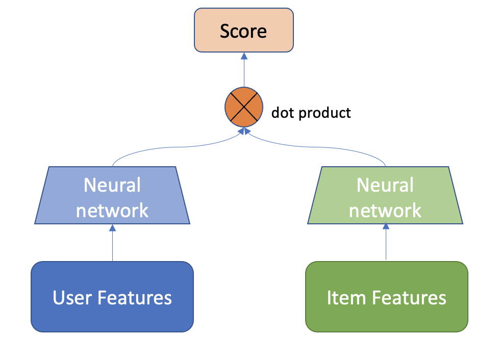

# Copyright 2021 NVIDIA Corporation. All Rights Reserved.
#
# Licensed under the Apache License, Version 2.0 (the "License");
# you may not use this file except in compliance with the License.
# You may obtain a copy of the License at
#
# http://www.apache.org/licenses/LICENSE-2.0
#
# Unless required by applicable law or agreed to in writing, software
# distributed under the License is distributed on an "AS IS" BASIS,
# WITHOUT WARRANTIES OR CONDITIONS OF ANY KIND, either express or implied.
# See the License for the specific language governing permissions and
# limitations under the License.
# ================================
Building a Retrieval Model with Merlin Models
This notebook is created using the latest stable merlin-tensorflow container.
In large scale recommender systems pipelines, the size of the item catalog (number of unique items) might be in the order of millions. At such scale, a typical setup is having two-stage pipeline, where a faster candidate retrieval model quickly extracts thousands of relevant items and a then a more powerful ranking model (i.e. with more features and more powerful architecture) ranks the top-k items that are going to be displayed to the user. For ML-based candidate retrieval model, as it needs to quickly score millions of items for a given user, a popular choices are models that can produce recommendation scores by just computing the dot product the user embeddings and item embeddings. Popular choices of such models are Matrix Factorization, which learns low-rank user and item embeddings, and the Two-Tower architecture, which is a neural network with two MLP towers where both user and item features are fed to generate user and item embeddings in the output.
Dataset
In this notebook, we are building a Two-Tower model for Item Retrieval task using synthetic datasets that are mimicking the real Ali-CCP: Alibaba Click and Conversion Prediction dataset.
Learning objectives
Preparing the data with NVTabular
Training and evaluating Two-Tower model with Merlin Models
Exporting the model for deployment
Generating the top K recommendations from the trained model
Importing Libraries
import os
import nvtabular as nvt
from nvtabular.ops import *
from merlin.models.utils.example_utils import workflow_fit_transform
from merlin.schema.tags import Tags
import merlin.models.tf as mm
from merlin.io.dataset import Dataset
from merlin.models.utils.dataset import unique_rows_by_features
import tensorflow as tf
/usr/lib/python3/dist-packages/requests/__init__.py:89: RequestsDependencyWarning: urllib3 (1.26.12) or chardet (3.0.4) doesn't match a supported version!
warnings.warn("urllib3 ({}) or chardet ({}) doesn't match a supported "
2022-11-30 18:38:41.379796: I tensorflow/core/platform/cpu_feature_guard.cc:194] This TensorFlow binary is optimized with oneAPI Deep Neural Network Library (oneDNN) to use the following CPU instructions in performance-critical operations: SSE3 SSE4.1 SSE4.2 AVX
To enable them in other operations, rebuild TensorFlow with the appropriate compiler flags.
2022-11-30 18:38:42.590379: I tensorflow/core/common_runtime/gpu/gpu_device.cc:1532] Created device /job:localhost/replica:0/task:0/device:GPU:0 with 16254 MB memory: -> device: 0, name: Quadro GV100, pci bus id: 0000:15:00.0, compute capability: 7.0
/usr/local/lib/python3.8/dist-packages/tqdm/auto.py:22: TqdmWarning: IProgress not found. Please update jupyter and ipywidgets. See https://ipywidgets.readthedocs.io/en/stable/user_install.html
from .autonotebook import tqdm as notebook_tqdm
# disable INFO and DEBUG logging everywhere
import logging
logging.disable(logging.WARNING)
Feature Engineering with NVTabular
Let’s generate synthetic train and validation dataset objects.
from merlin.datasets.synthetic import generate_data
DATA_FOLDER = os.environ.get("DATA_FOLDER", "/workspace/data/")
NUM_ROWS = os.environ.get("NUM_ROWS", 1000000)
SYNTHETIC_DATA = eval(os.environ.get("SYNTHETIC_DATA", "True"))
if SYNTHETIC_DATA:
train, valid = generate_data("aliccp-raw", int(NUM_ROWS), set_sizes=(0.7, 0.3))
else:
train = nvt.Dataset(DATA_FOLDER + "/train/*.parquet")
valid = nvt.Dataset(DATA_FOLDER + "/valid/*.parquet")
/usr/local/lib/python3.8/dist-packages/merlin/schema/tags.py:148: UserWarning: Compound tags like Tags.USER_ID have been deprecated and will be removed in a future version. Please use the atomic versions of these tags, like [<Tags.USER: 'user'>, <Tags.ID: 'id'>].
warnings.warn(
/usr/local/lib/python3.8/dist-packages/merlin/schema/tags.py:148: UserWarning: Compound tags like Tags.ITEM_ID have been deprecated and will be removed in a future version. Please use the atomic versions of these tags, like [<Tags.ITEM: 'item'>, <Tags.ID: 'id'>].
warnings.warn(
train = train.to_ddf().compute()
valid = valid.to_ddf().compute()
We keep only positive interactions where clicks==1 in the dataset.
train = train.loc[train['click']==1].reset_index(drop=True)
valid = valid.loc[valid['click']==1].reset_index(drop=True)
We can drop the target column since in this example we will only use positive interactions and then generate negative samples via negative sampling technique.
train = train.drop(['click', 'conversion'], axis=1)
valid = valid.drop(['click', 'conversion'], axis=1)
Create Dataset objects
train = Dataset(train)
valid = Dataset(valid)
Define output path for the processed parquet files
output_path = os.path.join(DATA_FOLDER, "processed")
category_temp_directory = os.path.join(DATA_FOLDER, "categories")
user_id = ["user_id"] >> Categorify(out_path=category_temp_directory) >> TagAsUserID()
item_id = ["item_id"] >> Categorify(out_path=category_temp_directory) >> TagAsItemID()
item_features = ["item_category", "item_shop", "item_brand"] >> Categorify(out_path=category_temp_directory) >> TagAsItemFeatures()
user_features = (
[
"user_shops",
"user_profile",
"user_group",
"user_gender",
"user_age",
"user_consumption_2",
"user_is_occupied",
"user_geography",
"user_intentions",
"user_brands",
"user_categories",
]
>> Categorify(out_path=category_temp_directory)
>> TagAsUserFeatures()
)
outputs = user_id + item_id + item_features + user_features
With transform_aliccp function, we can execute fit() and transform() on the raw dataset applying the operators defined in the NVTabular workflow pipeline above. The processed parquet files are saved to output_path.
from merlin.datasets.ecommerce import transform_aliccp
transform_aliccp((train, valid), output_path, nvt_workflow=outputs)
Building a Two-Tower Model with Merlin Models
We will use Two-Tower Model for item retrieval task. Real-world large scale recommender systems have hundreds of millions of items (products) and users. Thus, these systems often composed of two stages: candidate generation (retrieval) and ranking (scoring the retrieved items). At candidate generation step, a subset of relevant items from large item corpus is retrieved. You can read more about two stage Recommender Systems here. In this example, we’re going to focus on the retrieval stage.
A Two-Tower Model consists of item (candidate) and user (query) encoder towers. With two towers, the model can learn representations (embeddings) for queries and candidates separately.
{kind=link}
Image Adapted from: Off-policy Learning in Two-stage Recommender Systems
We use the schema object to define our model.
train = Dataset(os.path.join(output_path, "train", "*.parquet"))
valid = Dataset(os.path.join(output_path, "valid", "*.parquet"))
Select features with user and item tags, and be sure to exclude target column.
schema = train.schema.select_by_tag([Tags.ITEM_ID, Tags.USER_ID, Tags.ITEM, Tags.USER])
train.schema = schema
valid.schema = schema
We can print out the feature column names.
schema
| name | tags | dtype | is_list | is_ragged | properties.num_buckets | properties.freq_threshold | properties.max_size | properties.start_index | properties.cat_path | properties.embedding_sizes.cardinality | properties.embedding_sizes.dimension | properties.domain.min | properties.domain.max | properties.domain.name | |
|---|---|---|---|---|---|---|---|---|---|---|---|---|---|---|---|
| 0 | user_id | (Tags.USER, Tags.ID, Tags.CATEGORICAL, Tags.US... | int64 | False | False | None | 0.0 | 0.0 | 0.0 | /workspace/data/categories/categories/unique.u... | 663.0 | 61.0 | 0 | 662 | user_id |
| 1 | item_id | (Tags.ID, Tags.ITEM, Tags.CATEGORICAL, Tags.IT... | int64 | False | False | None | 0.0 | 0.0 | 0.0 | /workspace/data/categories/categories/unique.i... | 662.0 | 61.0 | 0 | 661 | item_id |
| 2 | item_category | (Tags.CATEGORICAL, Tags.ITEM) | int64 | False | False | None | 0.0 | 0.0 | 0.0 | /workspace/data/categories/categories/unique.i... | 662.0 | 61.0 | 0 | 661 | item_category |
| 3 | item_shop | (Tags.CATEGORICAL, Tags.ITEM) | int64 | False | False | None | 0.0 | 0.0 | 0.0 | /workspace/data/categories/categories/unique.i... | 662.0 | 61.0 | 0 | 661 | item_shop |
| 4 | item_brand | (Tags.CATEGORICAL, Tags.ITEM) | int64 | False | False | None | 0.0 | 0.0 | 0.0 | /workspace/data/categories/categories/unique.i... | 662.0 | 61.0 | 0 | 661 | item_brand |
| 5 | user_shops | (Tags.USER, Tags.CATEGORICAL) | int64 | False | False | None | 0.0 | 0.0 | 0.0 | /workspace/data/categories/categories/unique.u... | 663.0 | 61.0 | 0 | 662 | user_shops |
| 6 | user_profile | (Tags.USER, Tags.CATEGORICAL) | int64 | False | False | None | 0.0 | 0.0 | 0.0 | /workspace/data/categories/categories/unique.u... | 48.0 | 16.0 | 0 | 47 | user_profile |
| 7 | user_group | (Tags.USER, Tags.CATEGORICAL) | int64 | False | False | None | 0.0 | 0.0 | 0.0 | /workspace/data/categories/categories/unique.u... | 10.0 | 16.0 | 0 | 9 | user_group |
| 8 | user_gender | (Tags.USER, Tags.CATEGORICAL) | int64 | False | False | None | 0.0 | 0.0 | 0.0 | /workspace/data/categories/categories/unique.u... | 3.0 | 16.0 | 0 | 2 | user_gender |
| 9 | user_age | (Tags.USER, Tags.CATEGORICAL) | int64 | False | False | None | 0.0 | 0.0 | 0.0 | /workspace/data/categories/categories/unique.u... | 7.0 | 16.0 | 0 | 6 | user_age |
| 10 | user_consumption_2 | (Tags.USER, Tags.CATEGORICAL) | int64 | False | False | None | 0.0 | 0.0 | 0.0 | /workspace/data/categories/categories/unique.u... | 4.0 | 16.0 | 0 | 3 | user_consumption_2 |
| 11 | user_is_occupied | (Tags.USER, Tags.CATEGORICAL) | int64 | False | False | None | 0.0 | 0.0 | 0.0 | /workspace/data/categories/categories/unique.u... | 3.0 | 16.0 | 0 | 2 | user_is_occupied |
| 12 | user_geography | (Tags.USER, Tags.CATEGORICAL) | int64 | False | False | None | 0.0 | 0.0 | 0.0 | /workspace/data/categories/categories/unique.u... | 5.0 | 16.0 | 0 | 4 | user_geography |
| 13 | user_intentions | (Tags.USER, Tags.CATEGORICAL) | int64 | False | False | None | 0.0 | 0.0 | 0.0 | /workspace/data/categories/categories/unique.u... | 663.0 | 61.0 | 0 | 662 | user_intentions |
| 14 | user_brands | (Tags.USER, Tags.CATEGORICAL) | int64 | False | False | None | 0.0 | 0.0 | 0.0 | /workspace/data/categories/categories/unique.u... | 663.0 | 61.0 | 0 | 662 | user_brands |
| 15 | user_categories | (Tags.USER, Tags.CATEGORICAL) | int64 | False | False | None | 0.0 | 0.0 | 0.0 | /workspace/data/categories/categories/unique.u... | 663.0 | 61.0 | 0 | 662 | user_categories |
We expect the label names to be empty.
label_names = schema.select_by_tag(Tags.TARGET).column_names
label_names
[]
Negative sampling
Many datasets for recommender systems contain implicit feedback with logs of user interactions like clicks, add-to-cart, purchases, music listening events, rather than explicit ratings that reflects user preferences over items. To be able to learn from implicit feedback, we use the general (and naive) assumption that the interacted items are more relevant for the user than the non-interacted ones.
In Merlin Models we provide some scalable negative sampling algorithms for the Item Retrieval Task. In particular, in this example, we use the in-batch sampling algorithm which uses the items interacted by other users as negatives within the same mini-batch.
Building the Model
Now, let’s build our Two-Tower model. In a nutshell, we aggregate all user features to feed in user tower and feed the item features to the item tower. Then we compute the positive score by multiplying the user embedding with the item embedding and sample negative items (read more about negative sampling here and here), whose item embeddings are also multiplied by the user embedding. Then we apply the loss function on top of the positive and negative scores.
We make sure that the mlp blocks used for the user and query towers have the same last dimension. This is needed because we will compute the dot product between the two towers’ outputs to get the similarity scores.
tower_dim = 64
# create user schema using USER tag
user_schema = schema.select_by_tag(Tags.USER)
# create user (query) tower input block
user_inputs = mm.InputBlockV2(user_schema)
# create user (query) encoder block
query = mm.Encoder(user_inputs, mm.MLPBlock([128, tower_dim], no_activation_last_layer=True))
# create item schema using ITEM tag
item_schema = schema.select_by_tag(Tags.ITEM)
# create item (candidate) tower input block
item_inputs = mm.InputBlockV2(item_schema)
# create item (candidate) encoder block
candidate = mm.Encoder(item_inputs, mm.MLPBlock([128, tower_dim], no_activation_last_layer=True))
no_activation_last_layer: when set True, no activation is used for top hidden layer. Learn more here.
Build the model class.
model = mm.TwoTowerModelV2(query, candidate)
Note that in the TwoTowerModelV2 function we did not set negative_samplers arg, that means it is set to None. In that case, Two-tower model is trained with contrastive learning and in-batch negative sampling strategy.
Metrics:
The following information retrieval metrics are used to compute the Top-10 accuracy of recommendation lists containing all items:
Normalized Discounted Cumulative Gain (NDCG@10): NDCG accounts for rank of the relevant item in the recommendation list and is a more fine-grained metric than HR, which only verifies whether the relevant item is among the top-k items.
Recall@10: Also known as HitRate@n when there is only one relevant item in the recommendation list. Recall just verifies whether the relevant item is among the top-n items.
We need to initialize the dataloaders.
model.compile(optimizer="adam", run_eagerly=False, metrics=[mm.RecallAt(10), mm.NDCGAt(10)])
model.fit(train, validation_data=valid, batch_size=4096, epochs=2)
Epoch 1/2
86/86 [==============================] - 12s 48ms/step - loss: 8.2954 - recall_at_10: 0.0246 - ndcg_at_10: 0.0220 - regularization_loss: 0.0000e+00 - loss_batch: 8.2847 - val_loss: 8.2915 - val_recall_at_10: 0.0308 - val_ndcg_at_10: 0.0308 - val_regularization_loss: 0.0000e+00 - val_loss_batch: 7.8375
Epoch 2/2
86/86 [==============================] - 3s 34ms/step - loss: 8.2950 - recall_at_10: 0.0300 - ndcg_at_10: 0.0298 - regularization_loss: 0.0000e+00 - loss_batch: 8.2842 - val_loss: 8.2922 - val_recall_at_10: 0.0217 - val_ndcg_at_10: 0.0198 - val_regularization_loss: 0.0000e+00 - val_loss_batch: 7.8383
<keras.callbacks.History at 0x7f8af54c8730>
The validation metric values are calculated given the positive and negative scores in each batch, and then averaged over batches per epoch. That means validation metrics are not computed using the entire item catalog.
Evaluate the model accuracy
Note that above when we set validation_data=valid in the model.fit(), we compute evaluation metrics on validation set using the negative sampling strategy used for training. To determine the exact accuracy of our trained retrieval model, we need to compute the similarity score between a given query and all possible candidates. The higher the score of the positive candidate (the one that is already interacted with, i.e. target item_id returned by dataloader), the more accurate the model is. We can do this using the topk_model model that we create below via to_top_k_encoder method, and the following section shows how to instantiate it. The to_top_k_encoder() is a method of the RetrievalModelV2 class.
Below, by using the topk_model we can evaluate the trained retrieval model using the entire item catalog. This is applying dot product for entire catalog, and by default it is brute force.
# Top-K evaluation
candidate_features = unique_rows_by_features(train, Tags.ITEM, Tags.ITEM_ID)
candidate_features.head()
| item_id | item_category | item_shop | item_brand | |
|---|---|---|---|---|
| 93 | 1 | 1 | 1 | 1 |
| 6 | 2 | 2 | 2 | 2 |
| 5 | 3 | 3 | 3 | 3 |
| 39 | 4 | 4 | 4 | 4 |
| 22 | 5 | 5 | 5 | 5 |
topk = 20
topk_model = model.to_top_k_encoder(candidate_features, k=topk, batch_size=128)
# we can set `metrics` param in the `compile(), if we want
topk_model.compile(run_eagerly=False)
/usr/local/lib/python3.8/dist-packages/merlin/schema/tags.py:148: UserWarning: Compound tags like Tags.ITEM_ID have been deprecated and will be removed in a future version. Please use the atomic versions of these tags, like [<Tags.ITEM: 'item'>, <Tags.ID: 'id'>].
warnings.warn(
eval_loader = mm.Loader(valid, batch_size=1024).map(mm.ToTarget(schema, "item_id"))
metrics = topk_model.evaluate(eval_loader, return_dict=True)
metrics
147/147 [==============================] - 4s 15ms/step - loss: 0.4212 - recall_at_10: 0.0934 - mrr_at_10: 0.0341 - ndcg_at_10: 0.0478 - map_at_10: 0.0341 - precision_at_10: 0.0093 - regularization_loss: 0.0000e+00 - loss_batch: 0.4209
{'loss': 0.4212242662906647,
'recall_at_10': 0.09342904388904572,
'mrr_at_10': 0.03406976908445358,
'ndcg_at_10': 0.047799430787563324,
'map_at_10': 0.03406976908445358,
'precision_at_10': 0.009342900477349758,
'regularization_loss': 0.0,
'loss_batch': 0.3857615888118744}
Generate top-K recommendations
We trained a model, now we can generate recommendations offline using to_top_k_encoder method. The to_top_k_encoder() uses the pre-trained candidate and query encoders to initialize a top-k encoder model, called as topk_model in this example. Practically, this method applies the candidate_encoder on the provided candidate_features dataset to set the top-k index of the topk_model. Therefore, topk_model object is the one responsible of generating the top-k predictions.
Let’s generate top-K (k=20 in our example) recommendations for a given batch of 8 samples. The to_top_k_encoder() method uses the candidate (item) features dataset as the identifiers, i.e., we extract the candidate_id arg using Tags.ITEM_ID tag by default and set it as index when calculating the candidate embeddings. The forward method of topk_model takes as the query features as input, and computes the dot product scores between the given query embeddings and all the candidates of the top-k index. Then, it returns the top-k (k=20) item ids with the highest scores. Note that instead of calculating the candidate (item) tower embeddings for each user query, we compute the output of the item tower once and store it in the TopKEncoder class to use for the Top-k index. This is computationally more efficient.
eval_loader = mm.Loader(valid, batch_size=8, shuffle=False)
batch =next(iter(eval_loader))
Let’s check the user_id column in a given batch.
batch[0]['user_id']
<tf.Tensor: shape=(8, 1), dtype=int64, numpy=
array([[ 48],
[ 6],
[ 2],
[184],
[ 22],
[ 6],
[ 30],
[ 36]])>
The recommended top 20 item ids are returned below. The output of the method is a named tuple TopKPrediction, where the first element is the dot product scores and the second element is the encoded item ids (not the original ids).
topk_model(batch[0])
TopKPrediction(scores=<tf.Tensor: shape=(8, 20), dtype=float32, numpy=
array([[0.07914167, 0.06689327, 0.06665718, 0.0558873 , 0.05419895,
0.05162647, 0.05141887, 0.04779754, 0.04400383, 0.04338987,
0.04314638, 0.04218695, 0.04206986, 0.03964205, 0.03870573,
0.03738754, 0.03681045, 0.03679563, 0.03595291, 0.03488279],
[0.11142829, 0.1087153 , 0.09285022, 0.09184089, 0.09017296,
0.0819862 , 0.07968194, 0.07311831, 0.07131816, 0.06624649,
0.0660262 , 0.06577689, 0.06359623, 0.06272355, 0.06217033,
0.05999621, 0.05986039, 0.05904868, 0.05829312, 0.05809326],
[0.04108726, 0.03786915, 0.03679999, 0.03606556, 0.0341182 ,
0.03333249, 0.03283013, 0.03179491, 0.03027055, 0.03001958,
0.02996242, 0.02868335, 0.02752452, 0.02751509, 0.02742849,
0.02658201, 0.02591877, 0.02579155, 0.02546304, 0.02458519],
[0.03614997, 0.03377194, 0.03346077, 0.03037825, 0.02977451,
0.02895313, 0.02835435, 0.02678858, 0.02556792, 0.02539463,
0.02518579, 0.0251436 , 0.02497348, 0.02443891, 0.02432298,
0.02418283, 0.02345275, 0.02344878, 0.02332238, 0.0229562 ],
[0.08556695, 0.08040293, 0.08004925, 0.07905072, 0.07071923,
0.06996118, 0.06975519, 0.06796281, 0.06512717, 0.06391992,
0.06375775, 0.06356508, 0.06197023, 0.06085409, 0.05857427,
0.05686603, 0.05492353, 0.05487213, 0.05287076, 0.05180455],
[0.11142829, 0.1087153 , 0.09285022, 0.09184089, 0.09017296,
0.0819862 , 0.07968194, 0.07311831, 0.07131816, 0.06624649,
0.0660262 , 0.06577689, 0.06359623, 0.06272355, 0.06217033,
0.05999621, 0.05986039, 0.05904868, 0.05829312, 0.05809326],
[0.10821203, 0.09383179, 0.06738893, 0.06365363, 0.05353299,
0.04497425, 0.04346779, 0.04234669, 0.04175502, 0.04119734,
0.0407769 , 0.04059385, 0.04049742, 0.04042677, 0.03921955,
0.03844847, 0.03626748, 0.03532993, 0.03404151, 0.03349668],
[0.11652211, 0.11571186, 0.09148473, 0.08903328, 0.08306861,
0.08037847, 0.08032752, 0.0744494 , 0.07389667, 0.07335471,
0.07194579, 0.07136803, 0.06793442, 0.06658586, 0.06494202,
0.06410206, 0.06317658, 0.06307507, 0.05969208, 0.05949583]],
dtype=float32)>, identifiers=<tf.Tensor: shape=(8, 20), dtype=int32, numpy=
array([[ 27, 119, 145, 17, 130, 112, 28, 192, 222, 122, 307, 25, 125,
247, 118, 335, 601, 584, 398, 41],
[ 2, 3, 5, 9, 220, 301, 305, 308, 36, 277, 559, 545, 230,
13, 10, 615, 518, 132, 185, 468],
[144, 303, 18, 22, 209, 117, 14, 51, 37, 101, 331, 23, 404,
21, 26, 388, 156, 307, 15, 164],
[164, 121, 14, 117, 175, 118, 70, 100, 567, 368, 1, 4, 330,
554, 25, 207, 22, 206, 37, 248],
[ 26, 76, 35, 404, 59, 23, 117, 127, 430, 33, 87, 217, 158,
328, 96, 295, 167, 203, 169, 289],
[ 2, 3, 5, 9, 220, 301, 305, 308, 36, 277, 559, 545, 230,
13, 10, 615, 518, 132, 185, 468],
[ 4, 16, 68, 195, 324, 30, 334, 231, 128, 459, 114, 238, 120,
2, 660, 86, 89, 192, 255, 83],
[ 27, 21, 307, 11, 207, 76, 178, 138, 139, 48, 26, 78, 246,
146, 479, 67, 590, 188, 7, 169]], dtype=int32)>)
Exporting Retrieval Models
So far we have trained and evaluated our Retrieval model. Now, the next step is to deploy our model and generate top-K recommendations given a user (query). We can efficiently serve our model by indexing the trained item embeddings into an Approximate Nearest Neighbors (ANN) engine. Basically, for a given user query vector, that is generated passing the user features into user tower of retrieval model, we do an ANN search query to find the ids of nearby item vectors, and at serve time, we score user embeddings over all indexed top-K item embeddings within the ANN engine.
In doing so, we need to export
user (query) tower
item and user features
item embeddings
Save and Load User (query) tower
We are able to save the user tower model as a TF model to disk. The user tower model is needed to generate a user embedding vector when a user feature vector x is fed into that model.
query_tower = model.query_encoder
query_tower.save(os.path.join(DATA_FOLDER, "query_tower"))
## we can load back the saved model via the following script.
#query_tower_loaded = tf.keras.models.load_model(os.path.join(DATA_FOLDER, 'query_tower'))
Extract and save User features
With unique_rows_by_features utility function we can easily extract both unique user and item features tables as cuDF dataframes. Note that for user features table, we use USER and USER_ID tags.
user_features = (
unique_rows_by_features(train, Tags.USER, Tags.USER_ID).compute().reset_index(drop=True)
)
user_features.head()
| user_id | user_shops | user_profile | user_group | user_gender | user_age | user_consumption_2 | user_is_occupied | user_geography | user_intentions | user_brands | user_categories | |
|---|---|---|---|---|---|---|---|---|---|---|---|---|
| 0 | 1 | 1 | 1 | 1 | 1 | 1 | 1 | 1 | 1 | 1 | 1 | 1 |
| 1 | 2 | 2 | 1 | 1 | 1 | 1 | 1 | 1 | 1 | 2 | 2 | 2 |
| 2 | 3 | 3 | 1 | 1 | 1 | 1 | 1 | 1 | 1 | 3 | 3 | 3 |
| 3 | 4 | 4 | 1 | 1 | 1 | 1 | 1 | 1 | 1 | 4 | 4 | 4 |
| 4 | 5 | 5 | 1 | 1 | 1 | 1 | 1 | 1 | 1 | 5 | 5 | 5 |
# save to disk
user_features.to_parquet(os.path.join(DATA_FOLDER, "user_features.parquet"))
Generate Query embeddings for entire user catalog
queries = model.query_embeddings(Dataset(user_features, schema=schema), batch_size=1024, index=Tags.USER_ID)
query_embs_df = queries.compute(scheduler="synchronous").reset_index()
/usr/local/lib/python3.8/dist-packages/merlin/schema/tags.py:148: UserWarning: Compound tags like Tags.USER_ID have been deprecated and will be removed in a future version. Please use the atomic versions of these tags, like [<Tags.USER: 'user'>, <Tags.ID: 'id'>].
warnings.warn(
query_embs_df.head()
| user_id | 0 | 1 | 2 | 3 | 4 | 5 | 6 | 7 | 8 | ... | 54 | 55 | 56 | 57 | 58 | 59 | 60 | 61 | 62 | 63 | |
|---|---|---|---|---|---|---|---|---|---|---|---|---|---|---|---|---|---|---|---|---|---|
| 0 | 1 | 0.041951 | -0.020223 | 0.004236 | -0.019033 | 0.002884 | -0.080953 | 0.060585 | 0.052524 | -0.029782 | ... | 0.099736 | -0.028312 | 0.038981 | -0.098385 | -0.101973 | -0.051495 | 0.024279 | -0.053948 | -0.080442 | 0.004703 |
| 1 | 2 | 0.053807 | -0.033114 | -0.038405 | -0.050862 | 0.040319 | -0.060739 | 0.003956 | 0.012470 | -0.063603 | ... | 0.056157 | 0.034962 | -0.003549 | -0.070555 | -0.023475 | -0.058738 | 0.057749 | -0.013966 | -0.001620 | -0.030841 |
| 2 | 3 | -0.009804 | 0.025582 | -0.070978 | -0.062639 | 0.034251 | -0.105107 | 0.072854 | 0.016531 | -0.029134 | ... | 0.107710 | -0.068276 | 0.050339 | -0.135261 | -0.115445 | -0.076873 | 0.058914 | -0.050154 | -0.071277 | -0.031820 |
| 3 | 4 | -0.054897 | -0.090031 | 0.010316 | 0.045851 | -0.019615 | 0.002119 | 0.034532 | 0.125433 | -0.134117 | ... | 0.073807 | -0.021637 | 0.013071 | -0.145496 | -0.091502 | 0.029946 | 0.058051 | -0.018283 | 0.038066 | -0.105121 |
| 4 | 5 | 0.066658 | 0.028629 | 0.027072 | -0.024320 | 0.035782 | -0.049752 | 0.026108 | 0.030448 | -0.002598 | ... | 0.067228 | 0.029789 | 0.096082 | -0.076030 | -0.118867 | -0.053601 | 0.025621 | -0.001777 | -0.025906 | 0.021156 |
5 rows × 65 columns
Extract and save Item features
item_features = (
unique_rows_by_features(train, Tags.ITEM, Tags.ITEM_ID).compute().reset_index(drop=True)
)
item_features.head()
| item_id | item_category | item_shop | item_brand | |
|---|---|---|---|---|
| 0 | 1 | 1 | 1 | 1 |
| 1 | 2 | 2 | 2 | 2 |
| 2 | 3 | 3 | 3 | 3 |
| 3 | 4 | 4 | 4 | 4 |
| 4 | 5 | 5 | 5 | 5 |
# save to disk
item_features.to_parquet(os.path.join(DATA_FOLDER, "item_features.parquet"))
Extract and save Item embeddings
item_embs = model.candidate_embeddings(Dataset(item_features, schema=schema), batch_size=1024, index=Tags.ITEM_ID)
/usr/local/lib/python3.8/dist-packages/merlin/schema/tags.py:148: UserWarning: Compound tags like Tags.ITEM_ID have been deprecated and will be removed in a future version. Please use the atomic versions of these tags, like [<Tags.ITEM: 'item'>, <Tags.ID: 'id'>].
warnings.warn(
item_embs_df = item_embs.compute(scheduler="synchronous")
item_embs_df
| 0 | 1 | 2 | 3 | 4 | 5 | 6 | 7 | 8 | 9 | ... | 54 | 55 | 56 | 57 | 58 | 59 | 60 | 61 | 62 | 63 | |
|---|---|---|---|---|---|---|---|---|---|---|---|---|---|---|---|---|---|---|---|---|---|
| item_id | |||||||||||||||||||||
| 1 | -0.021552 | 0.009041 | 0.039659 | -0.115629 | 0.060703 | -0.025404 | 0.001678 | -0.022630 | -0.043372 | -0.043020 | ... | 0.055401 | -0.020197 | 0.091445 | -0.031282 | -0.038851 | 0.003069 | 0.018751 | 0.007528 | -0.035626 | -0.057195 |
| 2 | -0.083753 | -0.116476 | 0.073937 | -0.021895 | -0.037875 | 0.079780 | 0.004227 | -0.062871 | 0.067589 | -0.113532 | ... | 0.016558 | -0.062858 | 0.007280 | -0.145148 | -0.073590 | 0.060061 | 0.042919 | -0.088881 | 0.045371 | -0.048104 |
| 3 | -0.022572 | -0.143781 | 0.095565 | -0.072755 | -0.024208 | 0.016993 | -0.063992 | -0.016109 | -0.046727 | -0.076944 | ... | -0.016716 | -0.120303 | -0.027779 | -0.030434 | 0.003762 | 0.044557 | 0.028406 | -0.097061 | 0.047091 | -0.070876 |
| 4 | -0.034698 | 0.046747 | 0.050764 | -0.054780 | 0.049690 | -0.054132 | 0.044862 | -0.051085 | 0.025827 | -0.008969 | ... | 0.034949 | -0.009016 | -0.010063 | -0.007224 | 0.004805 | -0.033879 | 0.026008 | 0.066739 | -0.081608 | 0.002007 |
| 5 | 0.017667 | -0.093071 | 0.119211 | -0.039053 | -0.044223 | -0.002900 | -0.011234 | 0.021149 | 0.006894 | -0.073159 | ... | 0.041408 | -0.068992 | 0.081714 | 0.003833 | -0.015269 | -0.011885 | 0.041777 | -0.039943 | 0.100604 | -0.012898 |
| ... | ... | ... | ... | ... | ... | ... | ... | ... | ... | ... | ... | ... | ... | ... | ... | ... | ... | ... | ... | ... | ... |
| 657 | -0.008736 | -0.025814 | 0.021996 | -0.067662 | 0.038304 | -0.039822 | -0.014580 | -0.014729 | -0.051024 | -0.017028 | ... | 0.036276 | -0.017140 | 0.026932 | -0.039948 | -0.042317 | 0.036567 | 0.014907 | -0.069974 | 0.014789 | -0.000786 |
| 658 | 0.027235 | -0.055484 | 0.100215 | -0.022288 | -0.015791 | -0.013113 | -0.011211 | -0.060337 | -0.005251 | -0.066255 | ... | -0.007403 | 0.035502 | 0.051252 | 0.036262 | -0.033077 | 0.054807 | -0.015973 | -0.037896 | 0.036095 | -0.012522 |
| 659 | 0.000050 | -0.083014 | -0.003769 | -0.016448 | 0.058482 | 0.003810 | 0.002106 | -0.021589 | -0.029082 | -0.005173 | ... | -0.014442 | -0.045111 | 0.025007 | 0.011599 | -0.026002 | 0.031850 | 0.043968 | -0.053928 | 0.040387 | 0.037862 |
| 660 | 0.000492 | -0.041255 | 0.081524 | -0.083455 | -0.020575 | -0.030294 | -0.026690 | -0.076162 | 0.006011 | -0.035908 | ... | -0.015531 | 0.006367 | 0.016362 | 0.038916 | -0.027108 | -0.009466 | 0.007149 | 0.016705 | 0.010482 | 0.012888 |
| 661 | -0.022624 | -0.034587 | 0.018065 | -0.007772 | -0.001248 | 0.064035 | 0.059197 | 0.004046 | -0.047599 | -0.050420 | ... | 0.067813 | 0.057818 | 0.074110 | -0.052934 | -0.015619 | 0.083385 | -0.017303 | 0.056356 | 0.062265 | -0.011084 |
661 rows × 64 columns
# save to disk
item_embs_df.to_parquet(os.path.join(DATA_FOLDER, "item_embeddings.parquet"))
That’s it. You have learned how to train and evaluate your Two-Tower retrieval model, and then how to export the required components to be able to deploy this model to generate recommendations. In order to learn more on serving a model to Triton Inference Server, please explore the examples in the Merlin and Merlin Systems repos.